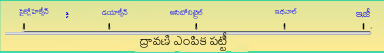
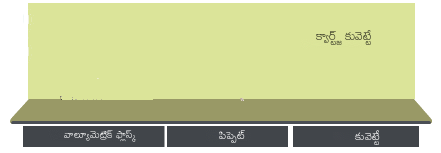

×
మాన్యువల్
- ఐదు 1 × 10 సిద్ధం-5ద్రావకాలలో M కొమారిన్ -138 పరిష్కారాలు: సైక్లోహెక్సేన్, డయాక్సేన్, అసిటోనిట్రైల్, ఇథైల్ ఆల్కహాల్ మరియు ఇథిలీన్ గ్లైకాల్. ఇటువంటి పలుచన పరిష్కారాలను 1 × 10 నుండి పలుచన ద్వారా తయారు చేయవచ్చు-4సంబంధిత ద్రావకాలలో M స్టాక్ సొల్యూషన్స్. ఇక్కడ వివిధ ద్రావకాలలోని పరిష్కారాలు ద్రావణి ఎంపిక పట్టీలో చూపబడతాయి.
- అన్ని పరిష్కారాలతో శోషణ కొలతలు ఈ క్రింది విధంగా జరుగుతాయి.
- ఒక నిర్దిష్ట పరిష్కారం తీసుకోవడానికి, ద్రావకం ఎంపిక పట్టీపై తగిన ద్రావకంపై క్లిక్ చేసి, ఆపై ద్రావణాన్ని కలిగి ఉన్న వాల్యూమెట్రిక్ ఫ్లాస్క్పై క్లిక్ చేయండి.
- ఇన్స్ట్రుమెంట్ టేబుల్కు తీసుకెళ్లడానికి క్వార్ట్జ్ కువెట్టే (మార్గం పొడవు, 1 సెం.మీ. × 1 సెం.మీ) పై క్లిక్ చేయండి.
- క్వార్ట్జ్ క్యూవెట్లోకి బదిలీ చేయబడే ప్రయోగాత్మక ద్రావణంలో 3 ఎంఎల్ను సేకరించడానికి గాజు పాశ్చర్ పైపెట్పై క్లిక్ చేయండి.
- దానిలో పరిష్కారాన్ని గీయడానికి పైపెట్ పై క్లిక్ చేయండి.
- వాల్యూమెట్రిక్ ఫ్లాస్క్ నుండి తీయడానికి పైపెట్ పై క్లిక్ చేయండి.
- క్యూవెట్లోకి ద్రావణాన్ని బదిలీ చేయడానికి మళ్లీ పైప్పై క్లిక్ చేయండి. శోషణ స్పెక్ట్రల్ స్కాన్ను ప్రారంభించడానికి, పాప్-అప్ “స్టార్ట్ శోషణ కొలత” పై క్లిక్ చేయండి.
- పవర్ బటన్ పై క్లిక్ చేయడం ద్వారా స్పెక్ట్రోఫోటోమీటర్ ఆన్ చేయండి. నిజమైన ఆపరేషన్లో, ఇది సుమారు పడుతుంది. పరికరం ప్రారంభించడానికి 30 నిమిషాలు.
- సెల్-హోల్డర్లో నమూనాను ఉంచడానికి మూతపై క్లిక్ చేయడం ద్వారా స్పెక్ట్రోఫోటోమీటర్ యొక్క నమూనా గది యొక్క మూతను తెరవండి. నమూనా హోల్డర్లో ఉంచడానికి కువెట్పై క్లిక్ చేయండి. ఈ కొలతలో స్వచ్ఛమైన ద్రావకాన్ని నమూనా ఖాళీగా లేదా సూచనగా ఉపయోగించాలి. ఇక్కడ డబుల్ బీమ్ స్పెక్ట్రోఫోటోమీటర్ చూపబడింది.
- నమూనా గది యొక్క మూతపై క్లిక్ చేయడం ద్వారా దాన్ని మూసివేయండి.
- కంప్యూటర్ మానిటర్లోని శోషణ కొలత చిహ్నంపై క్లిక్ చేయడం ద్వారా కొలత సెటప్ స్క్రీన్ను తెరవండి.
- తెరపై, తరంగదైర్ఘ్యం పరిధిని నమోదు చేయండి. ప్రారంభం: 430 ఎన్ఎమ్ ముగింపు: 275 ఎన్ఎమ్. నిజమైన ఆపరేషన్లో, నమూనా కోసం సంఘటన కాంతి యొక్క తరంగదైర్ఘ్యం పరిధి ఎంచుకోబడుతుంది మరియు తరంగదైర్ఘ్యం స్కాన్ కంప్యూటర్ సాఫ్ట్వేర్ ద్వారా నడుస్తుంది. ఒకరు స్కాన్ను శోషక (ఎ) లేదా ట్రాన్స్మిటెన్స్ (% టి) మోడ్లో అమలు చేయవచ్చు.
- తరంగదైర్ఘ్యం స్కాన్ను అమలు చేయడానికి కొలత సెటప్ స్క్రీన్పై ఆకుపచ్చ ప్రారంభ బటన్పై క్లిక్ చేయండి. తరంగదైర్ఘ్యం స్కాన్ను గమనించండి.
- స్పెక్ట్రల్ స్కాన్ పూర్తయినప్పుడు క్లోజ్ బటన్ పై క్లిక్ చేయండి. నిజమైన ఆపరేషన్లో, స్కాన్ డేటా కంప్యూటర్లో నిల్వ చేయబడుతుంది. పరికరం డేటాను నిల్వ చేస్తుంది మరియు అందువల్ల నమూనా ఫైల్ పేరును అడుగుతుంది. డేటాను సేవ్ చేయడానికి ఒకరు ఫైల్ పేరును నమోదు చేస్తారు.
- నమూనా గది నుండి క్యూట్ను బయటకు తీయడానికి, మొదట దానిని తెరవడానికి నమూనా చాంబర్ మూతపై క్లిక్ చేసి, ఆపై cuvette పై క్లిక్ చేయండి. దాన్ని మూసివేయడానికి నమూనా గది యొక్క మూతపై క్లిక్ చేయండి.
- కొలతలను ప్రారంభించడానికి రీసెట్ బటన్ పై క్లిక్ చేయండి.
- మొదట ద్రావణి ఎంపిక పట్టీపై క్లిక్ చేసి, ఆపై ద్రావణాన్ని కలిగి ఉన్న వాల్యూమెట్రిక్ ఫ్లాస్క్పై క్లిక్ చేయడం ద్వారా అన్ని ద్రావకాలతో శోషణ కొలతలను పునరావృతం చేయండి.
- డేటా టాబ్పై క్లిక్ చేయడం ద్వారా మొత్తం డేటాను సేకరించండి.
- వేర్వేరు ద్రావకాలతో UV- కనిపించే శోషణ స్పెక్ట్రాను పరిశీలించండి.
- అన్ని ద్రావకాలకు గరిష్ట శోషణ తరంగదైర్ఘ్యాలు మరియు సంబంధిత శోషణ విలువలను కనుగొని, వాటిని ద్రావణి విద్యుద్వాహక స్థిరాంకాలు మరియు వక్రీభవన సూచికల విలువలతో పాటు పట్టిక చేయండి.
- ద్రావణ ధ్రువణత మరియు గరిష్ట శోషణ యొక్క తరంగదైర్ఘ్యం మధ్య సంబంధం లేదా ధోరణి ఉందా?
- మీ పరిశీలనలను చర్చించండి.


